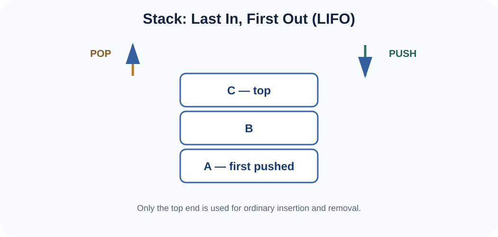
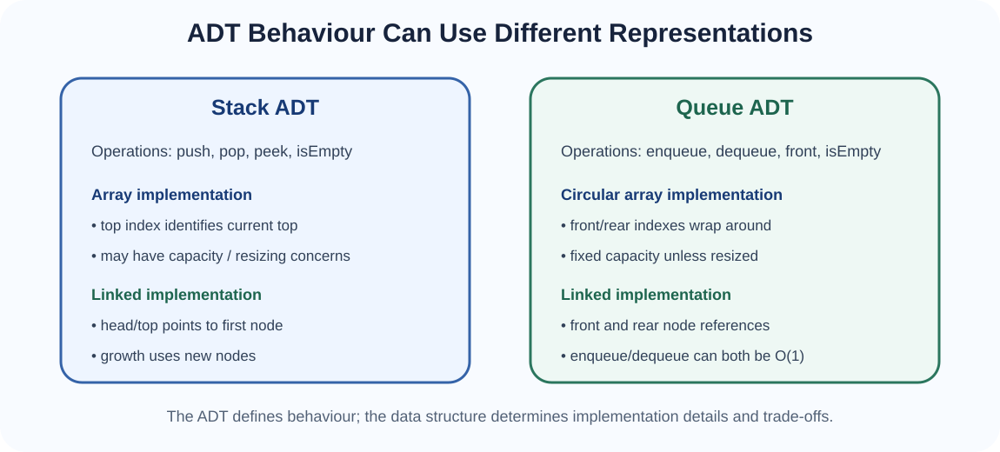
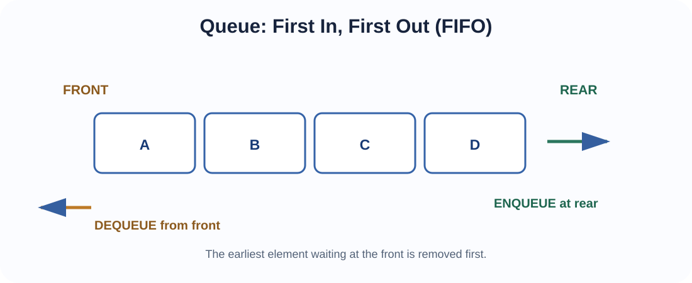
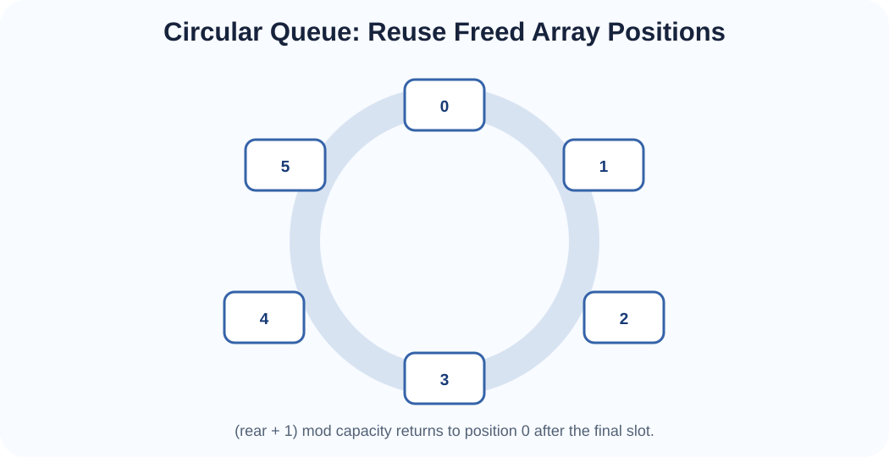
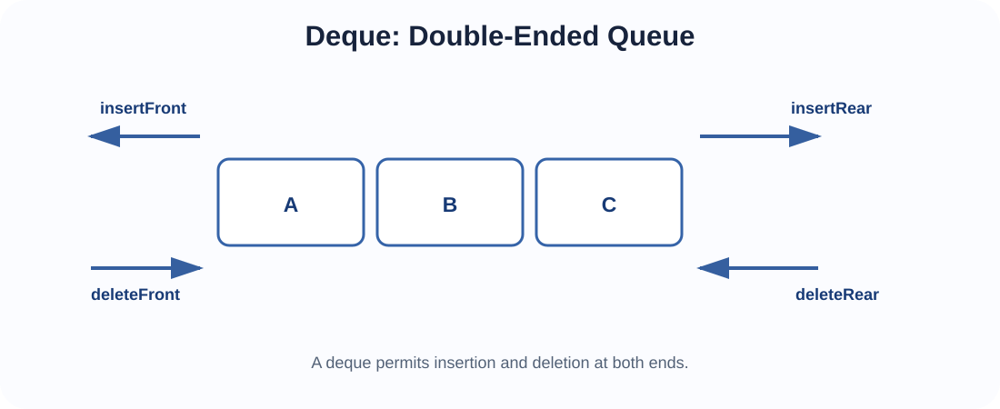

Restricted-access ADTs whose simple rules make them powerful building blocks for algorithms and real systems.
Arrays and linked lists allow many possible operations. Sometimes a problem becomes easier to reason about when we deliberately restrict those operations. A stack restricts ordinary insertion and removal to one end. A queue inserts at one end and removes from the other. A deque allows controlled operations at both ends.
These are best understood first as Abstract Data Types. Their behaviour is defined independently of whether they are implemented using arrays or linked nodes.
A stack follows Last In, First Out (LIFO). The most recently inserted item is the first item removed.

A physical stack of plates is a useful analogy: a plate placed on top is normally the first one removed. In computing, the rule appears in function calls, undo operations, parsing and depth-first exploration.
Stack-like organisation became important in early computing for evaluating expressions and managing nested procedure calls. The concept was formalised in the 1950s and became fundamental in compiler construction and runtime systems. Modern processors, programming languages and virtual machines still use stack-based ideas extensively.
ALGORITHM Push(stack, value)
add value at TOP
ALGORITHM Pop(stack)
IF stack is empty
RETURN UNDERFLOW
value ← item at TOP
remove item at TOP
RETURN value
ALGORITHM Peek(stack)
IF stack is empty
RETURN "empty"
RETURN item at TOPAn array stack commonly keeps an integer top. If top = -1, the stack is empty. Otherwise A[top] is the current top.
ALGORITHM ArrayStackPush(A, top, capacity, value)
IF top = capacity - 1
RETURN OVERFLOW
top ← top + 1
A[top] ← value
RETURN topALGORITHM ArrayStackPop(A, top)
IF top = -1
RETURN UNDERFLOW
value ← A[top]
top ← top - 1
RETURN value, topALGORITHM ArrayStackPeek(A, top)
IF top = -1
RETURN "empty"
RETURN A[top]
ALGORITHM ArrayStackIsEmpty(top)
RETURN (top = -1)
ALGORITHM ArrayStackSize(top)
RETURN top + 1These operations are normally O(1). A fixed array may overflow; a dynamic array can resize when capacity is exhausted.

A linked stack can treat the head node as the top. Push inserts at the head; pop removes the head.
ALGORITHM LinkedStackPush(top, value)
newNode ← Node(value)
newNode.next ← top
top ← newNode
RETURN topALGORITHM LinkedStackPop(top)
IF top = null
RETURN UNDERFLOW
value ← top.data
top ← top.next
RETURN value, topALGORITHM LinkedStackPeek(top)
IF top = null
RETURN "empty"
RETURN top.data
ALGORITHM LinkedStackIsEmpty(top)
RETURN (top = null)If size is required frequently, a count can be maintained and updated during push/pop. Push and pop remain O(1).
Underflow occurs when pop or peek is attempted on an empty stack. Overflow occurs when a fixed-capacity stack cannot accept another value. A robust implementation must define how these conditions are handled.
The next closing bracket must match the most recent unmatched opening bracket — exactly a LIFO relationship.
ALGORITHM AreBracketsBalanced(text)
create empty stack S
FOR each character c in text
IF c is an opening bracket
S.push(c)
ELSE IF c is a closing bracket
IF S.isEmpty()
RETURN false
open ← S.pop()
IF open does not match c
RETURN false
RETURN S.isEmpty()A queue follows First In, First Out (FIFO). New values join at the rear; removal occurs at the front.

The waiting-line analogy is useful: the person who arrived earliest is normally served first.
Queueing concepts predate computers, but queues became fundamental in operating systems, communication systems, simulations and input/output processing because many tasks must wait for service.
A basic array queue can keep front and rear indexes.
ALGORITHM LinearQueueEnqueue(A, front, rear, capacity, value)
IF rear = capacity - 1
RETURN OVERFLOW
IF front = -1
front ← 0
rear ← rear + 1
A[rear] ← value
RETURN front, rearALGORITHM LinearQueueDequeue(A, front, rear)
IF front = -1 OR front > rear
RETURN UNDERFLOW
value ← A[front]
front ← front + 1
IF front > rear
front ← -1
rear ← -1
RETURN value, front, rearALGORITHM LinearQueueFront(A, front)
IF front = -1
RETURN "empty"
RETURN A[front]
ALGORITHM LinearQueueRear(A, rear)
IF rear = -1
RETURN "empty"
RETURN A[rear]After several dequeues, free positions may exist at the beginning of the array while rear has reached the final slot. Shifting after every dequeue is wasteful. A circular queue solves this by reusing earlier positions.

A circular queue treats the array as if the end connects logically to the beginning. Movement uses:
To keep empty and full states unambiguous, the following pseudocode maintains front, rear and count.
ALGORITHM CircularEnqueue(A, front, rear, count, capacity, value)
IF count = capacity
RETURN OVERFLOW
IF count = 0
front ← 0
rear ← 0
ELSE
rear ← (rear + 1) mod capacity
A[rear] ← value
count ← count + 1
RETURN front, rear, countALGORITHM CircularDequeue(A, front, rear, count, capacity)
IF count = 0
RETURN UNDERFLOW
value ← A[front]
IF count = 1
front ← -1
rear ← -1
ELSE
front ← (front + 1) mod capacity
count ← count - 1
RETURN value, front, rear, countALGORITHM CircularFront(A, front, count)
IF count = 0
RETURN "empty"
RETURN A[front]
ALGORITHM CircularRear(A, rear, count)
IF count = 0
RETURN "empty"
RETURN A[rear]
ALGORITHM CircularIsEmpty(count)
RETURN (count = 0)
ALGORITHM CircularSize(count)
RETURN countEnqueue and dequeue are O(1) because no shifting is required.
A linked queue normally stores both front and rear references. Enqueue attaches after rear; dequeue removes front.
ALGORITHM LinkedQueueEnqueue(front, rear, value)
newNode ← Node(value)
newNode.next ← null
IF rear = null
front ← newNode
rear ← newNode
RETURN front, rear
rear.next ← newNode
rear ← newNode
RETURN front, rearALGORITHM LinkedQueueDequeue(front, rear)
IF front = null
RETURN UNDERFLOW
value ← front.data
front ← front.next
IF front = null
rear ← null
RETURN value, front, rearALGORITHM LinkedQueueFront(front)
IF front = null
RETURN "empty"
RETURN front.data
ALGORITHM LinkedQueueRear(rear)
IF rear = null
RETURN "empty"
RETURN rear.data
ALGORITHM LinkedQueueIsEmpty(front)
RETURN (front = null)Maintaining both ends allows enqueue and dequeue to remain O(1).
A deque (pronounced “deck”) allows insertion and deletion at both front and rear.

insertFront(value)insertRear(value)deleteFront()deleteRear()getFront()getRear()isEmpty()ALGORITHM DequeInsertFront(A, front, rear, count, capacity, value)
IF count = capacity
RETURN OVERFLOW
IF count = 0
front ← 0
rear ← 0
ELSE
front ← (front - 1 + capacity) mod capacity
A[front] ← value
count ← count + 1
RETURN front, rear, countALGORITHM DequeInsertRear(A, front, rear, count, capacity, value)
IF count = capacity
RETURN OVERFLOW
IF count = 0
front ← 0
rear ← 0
ELSE
rear ← (rear + 1) mod capacity
A[rear] ← value
count ← count + 1
RETURN front, rear, countALGORITHM DequeDeleteFront(A, front, rear, count, capacity)
IF count = 0
RETURN UNDERFLOW
value ← A[front]
IF count = 1
front ← -1
rear ← -1
ELSE
front ← (front + 1) mod capacity
count ← count - 1
RETURN value, front, rear, countALGORITHM DequeDeleteRear(A, front, rear, count, capacity)
IF count = 0
RETURN UNDERFLOW
value ← A[rear]
IF count = 1
front ← -1
rear ← -1
ELSE
rear ← (rear - 1 + capacity) mod capacity
count ← count - 1
RETURN value, front, rear, countALGORITHM DequeGetFront(A, front, count)
IF count = 0
RETURN "empty"
RETURN A[front]
ALGORITHM DequeGetRear(A, rear, count)
IF count = 0
RETURN "empty"
RETURN A[rear]| Structure | Insertion | Removal | Behaviour | Typical use |
|---|---|---|---|---|
| Stack | Top | Top | LIFO | Undo, calls, DFS |
| Queue | Rear | Front | FIFO | Scheduling, BFS, service requests |
| Deque | Front or rear | Front or rear | Double-ended | Sliding windows, flexible buffering |
| ADT | Array-style implementation | Linked implementation |
|---|---|---|
| Stack | Simple top index; compact; may need resize | Push/pop at head; dynamic nodes |
| Queue | Circular array avoids shifts; fixed capacity unless resized | front/rear references; dynamic nodes |
| Deque | Circular array supports both ends | Doubly linked list naturally supports both ends |
Topic 5 studies recursion and iteration. The connection is direct: recursive function calls are managed using a call stack. A call pushes a frame; a return pops it. LIFO explains why the most recent unfinished call returns first.